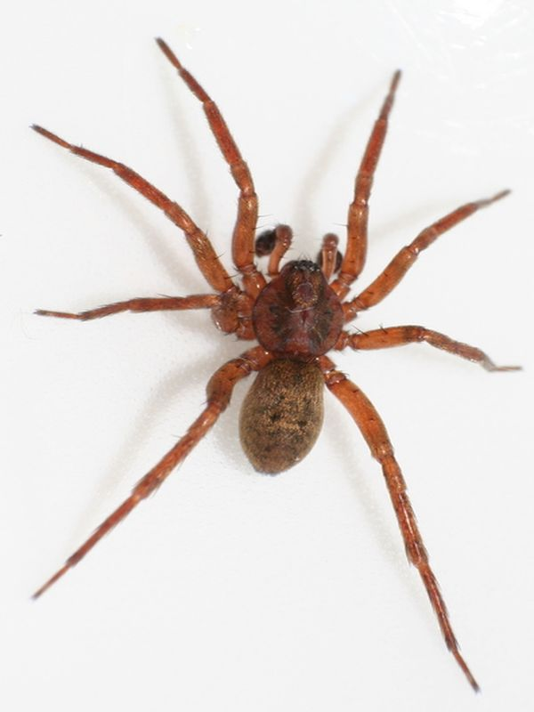

Feenlämpchenspinne
Agroeca brunnea
Die Feenlämpchen-Spinne wird wegen ihrer heimlichen Lebensweise nur selten gesehen.
Ihre Präsenz verraten jedoch die an Grashalmen befestigten Eikokons, im Volksmund „Feenlämpchen" genannt.
Die Feenlämpchen-Spinne wird wegen ihrer heimlichen Lebensweise nur selten gesehen.
Ihre Präsenz verraten jedoch die an Grashalmen befestigten Eikokons, im Volksmund „Feenlämpchen" genannt.